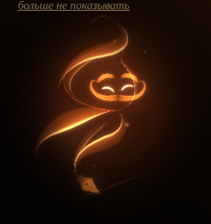

Мама впервые увидела трамвай, когда ей было шесть лет. Они с бабушкой шли по Головинскому, и вдруг из-за угла выехал красный вагон, звенящий, как колокольчик.
Мама спряталась за бабушкину юбку, а потом весь вечер рассказывала соседям, что видела «дом на колёсах».
